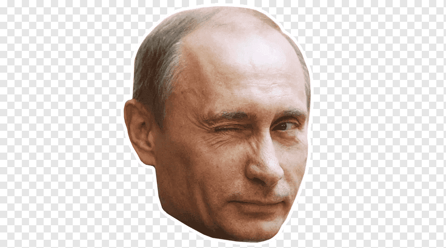

какой-то заголовок
текст
выделенный текст
курсив
полужирный
подчеркнутый
перечеркнутый
уменшить шрифт
над индекс
под индекс
выделение важных фрагментов курсивом
выделение особо важных фрагментов полужирным
выделение фрагмента подчеркиванием, когда требуется
показать явно, что текст был вставлен после опубликования
документа.
выделение фрагмента перечеркиванием, когда
требуется показать явно, что текст был удален после
опубликования документа.
выделение цитат курсивом
отображение фрагментов программного кода
моноширинным шрифтом
какой-то заголовок внизу
ссылка на заголовок
visit yandex!
visit yandex!!
